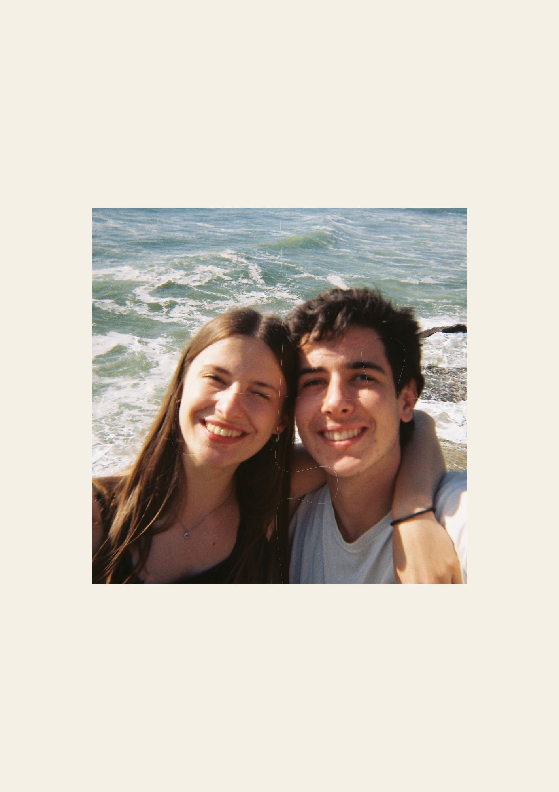

Com as 4 peças do puzzle finalmente reunidas, uma luz suave envolve o jardim do palácio. Eis que surge a princesa, com um sorriso aberto e um copo do "Arrail do Técnico" cheio de cerveja.
O Infante, agora confiante e com o coração aos pulos, junta-se a ela e juntos encaixam as peças.
A princesa olha para o Infante, sorri e lê o seu nome escrito à mão na sua camisola branca, juntamente com o nome da sua terra, por baixo de uns desenhos da Wii.
"Então, Tiago..." - lê ela na t-shirt - "afinal és... de Sevilheira?"
A princesa franze o sobrolho e ri-se:
"Não faço a menor ideia de onde isso é, desculpa."
"É em Mafra, mas eu prometi aos meus amigos da Sevi que sempre responderia Sevilheira se me perguntassem de onde sou."
"E tu?... És a Carolina, a amiga do Vieira certo? Também és de Cascais? Nunca pensei ver uma beta a beber cerveja."
Ambos riem. E o resto... bem, o resto é história.